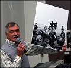

Nils-Olof Berglund
Byggnadsing., byaålderman och hembygdsforskare.
| Född: | 1940-04-26 Boviken, Skellefteå lfs, Skellefteå sn. [1] |
|---|
| Vigsel: | 1966-07-16. [2] | Vigselförrättare Siws farbror kyrkoherde Erik Fahlgren. |
|---|
| Levde: | 1971 Seminarieg 7, Skellefteå, Sankt Olovs fs, Skellefteå kn. [2] | |
|---|
| Levde: | 1981 Boviken 3:18, Boviken, Skellefteå lfs, Skellefteå kn. [3] | |
|---|
| Levde: | 1991 Boviken 3:18, Boviken 269, Skellefteå lfs, Skellefteå kn. [4] | |
|---|
| : | 2000 Boviksbadet 217, Boviken, Skellefteå lfs, Skellefteå kn. [5] | |
|---|
| Levde: | 2011 Boviksbadet 217, Boviken, Skellefteå lfs, Skellefteå kn. [6] | |
|---|
Noteringar
Böcker där Nils-Olof Berglund har medverkat:
1971-1977:
Ett sekel i Skelleftebygden
Skelleftebygdens dialekter
Ortnamn i Skelleftebygden
Finska evakueringen 1944-45.
2007:
Byaboken -Livet vid Boviksfjärden
Insiativtagare till bildandet av Bodwiks Hembygdsförening 1975 samt dess ordförande i 30 år.. Ansvarig för föreningens byggande av Båt- och Fiskemuseum, invigt 1998 av landshövding Georg Andersson. Ansvarar för föreningens fotosamling.Byaålderman i Boviken sedan 1972.
Medverkat vid berättarfestivalen 2010,2011 och 2012.
Flitgt anliitad föredragshållare.
Personhistoria
| Årtal | Ålder | Händelse |
|---|
| 1940 |
|
Födelse 1940-04-26 Boviken, Skellefteå lfs, Skellefteå sn [1] |
| 1943 |
3 år |
Makan Siw Berit Sofia Fahlgren Berglund föds 1943-05-15 Varuträsk 3:24, Skellefteå lfs, Skellefteå sn [7] |
| 1966 |
26 år |
Vigsel Siw Berit Sofia Fahlgren Berglund 1966-07-16 [2] |
| 1971 |
|
Levde Siw Berit Sofia Fahlgren Berglund 1971 Seminarieg 7, Skellefteå, Sankt Olovs fs, Skellefteå kn [2] |
| 1978 |
37 år |
Fadern Johan Olof Berglund dör 1978-01-11 Boviken 3:18, Boviken, Skellefteå lfs, Skellefteå kn [8] |
| 1981 |
|
Levde Siw Berit Sofia Fahlgren Berglund 1981 Boviken 3:18, Boviken, Skellefteå lfs, Skellefteå kn [3] |
| 1991 |
|
Levde Siw Berit Sofia Fahlgren Berglund 1991 Boviken 3:18, Boviken 269, Skellefteå lfs, Skellefteå kn [4] |
| 2000 |
|
Siw Berit Sofia Fahlgren Berglund 2000 Boviksbadet 217, Boviken, Skellefteå lfs, Skellefteå kn [5] |
| 2005 |
65 år |
Modern Lilly Kristina Viklund dör 2005-07-17 Boviken 3:18, Boviken, Skellefteå lfs, Skellefteå kn [9] |
| 2011 |
|
Levde Siw Berit Sofia Fahlgren Berglund 2011 Boviksbadet 217, Boviken, Skellefteå lfs, Skellefteå kn [6] |
Dokument
Källor
| [1] | SCB Födda AC Skellefteå lfs 141/1940, Mtl Västerbottens län 1971 |
| |
| | |
| [2] | Mtl Västerbottens län 1971 |
| |
| | |
| [3] | Mtl Västerbottens län 1981 |
| |
| | |
| [4] | Mantalslängd 1991, Västerbottens län |
| |
| | |
| [5] | N-O Berglund |
| |
| | |
| [6] | www.hitta.se, www.ratsit.se |
| |
| | |
| [7] | SCB Födda AC Skellefteå lfs 144/1943, Mtl Västerbottens län 1971 |
| |
| | |
| [8] | RTB 78 / SPAR 80 |
| |
| | |
| [9] | man91 / RFV 06 |
| |
|
|  |
| 2011-09-19. Nils-Olof Berglund berättar om fotografen Anette K. Boström, Boviken, i anslutning till utställningen "Kvinnor bakom kameran" på Skellefteå Museum. |
|
{kind=link}